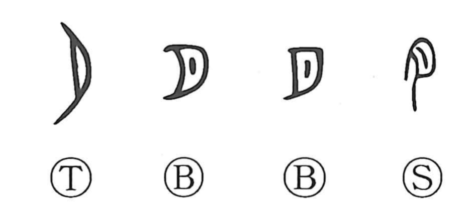

月

Kun: tsuki | On: getsu, gatsu
moon ・ month
Explanation
月 pictures the crescent moon. Oracle-bone drawings vary by period, and some can also serve for 夕, evening, but the curved lunar outline remains recognizable. The received rectangular side and interior strokes are later developments of that shape.
The moon's waxing and waning measures a recurring period, giving 月 the meaning ‘month.’ From months come the broader passage of years and time. It also names menstruation through its periodic return.
A 月-shaped component in another character may instead be the abbreviated flesh sign 肉, as in many words for the body. The crescent and the flesh-sign have converged in the compact modern script.